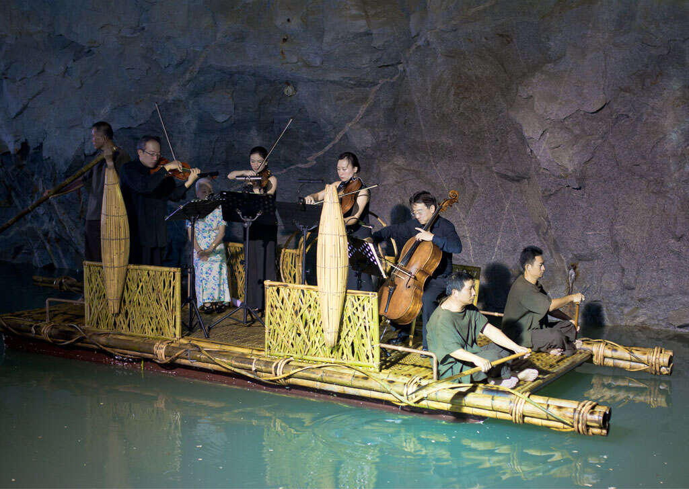
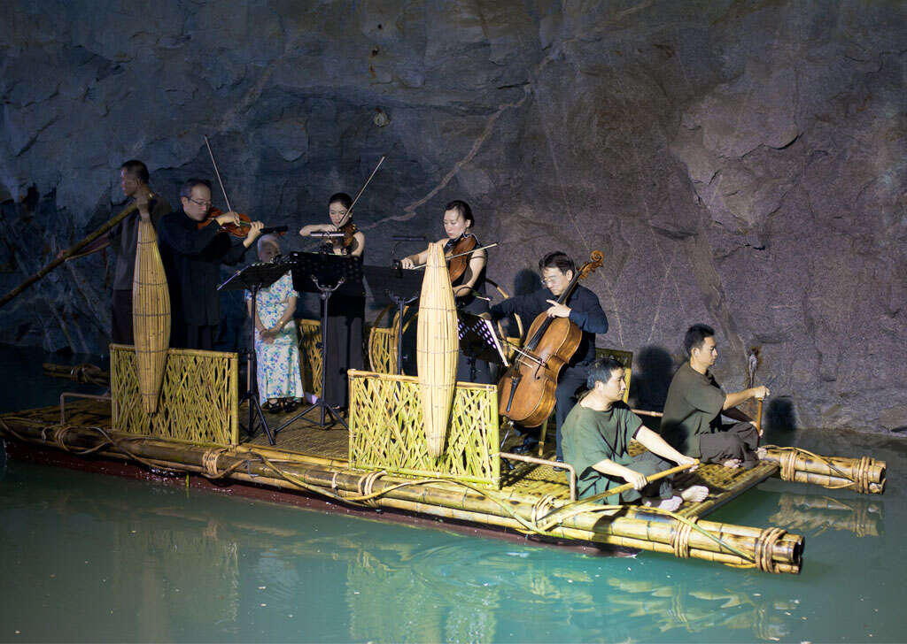

金門
金門坑道音樂節 2020
弦樂四重奏是西方古典音樂中最有深度的形式，每每在坑道音樂節中將觀眾無限的期待轉化為極大的感動，四種弦樂器的聲響在坑道中相互交融，將室內樂的精緻與美感做最佳的呈現。兩天演出分別搭配人聲、口琴，將呈現給觀眾截然不同的風味。有別於以往，今年另一大亮點是演奏平台將由禮洋花藝的新銳設計師榮孝洋特別設計，在有限的舞台空間裡以花藝裝飾，帶給觀眾欣欣向榮的希望。
- 活動日期 2020-11-07~2020-11-08
- 活動地點 893 金門縣金城鎮翟山坑道
弦樂四重奏是西方古典音樂中最有深度的形式，每每在坑道音樂節中將觀眾無限的期待轉化為極大的感動，四種弦樂器的聲響在坑道中相互交融，將室內樂的精緻與美感做最佳的呈現。兩天演出分別搭配人聲、口琴，將呈現給觀眾截然不同的風味。有別於以往，今年另一大亮點是演奏平台將由禮洋花藝的新銳設計師榮孝洋特別設計，在有限的舞台空間裡以花藝裝飾，帶給觀眾欣欣向榮的希望。
活動預告


馬祖
吹響馬祖-阿道夫公益樂團演出
- 時間：2020/10/11 19:00-21:00
- 地點：介壽澳口公園(白馬王公園)
活動錄影
2020吹響馬祖活動影片
2020吹響馬祖活動影片
澎湖
澎湖國際海上花火節 2020
- 活動日期：2020年7月6日至2020年9月3日
- 活動地點：主場地馬公市觀音亭園區
- 觀音亭場次煙火施放時間為 21：00
- 離島場次（吉貝、七美、望安）煙火施放時間為 20：00
2020 花火節錄影